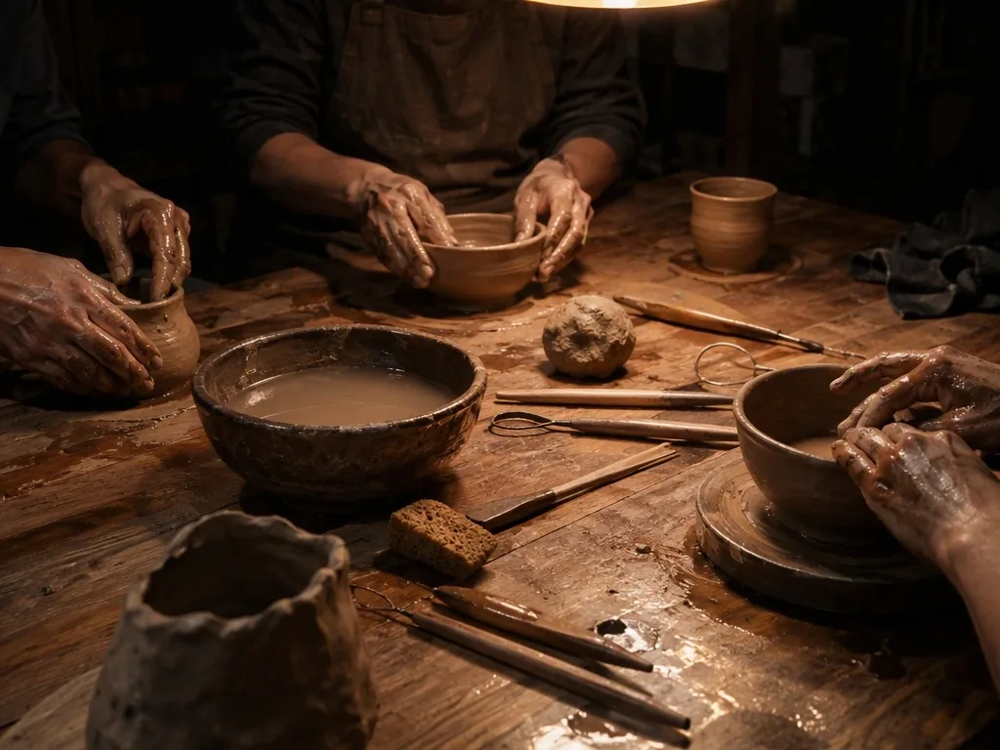
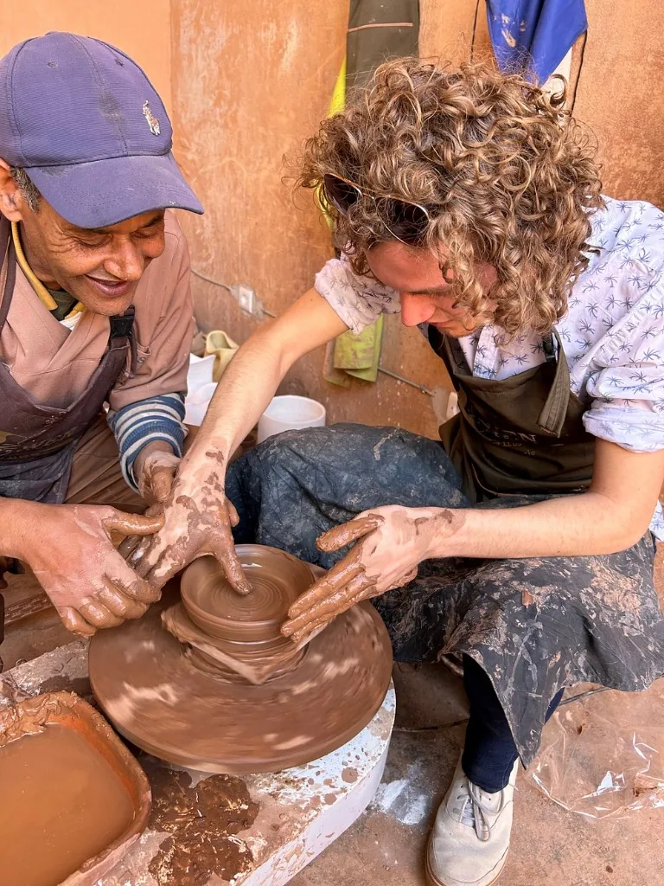
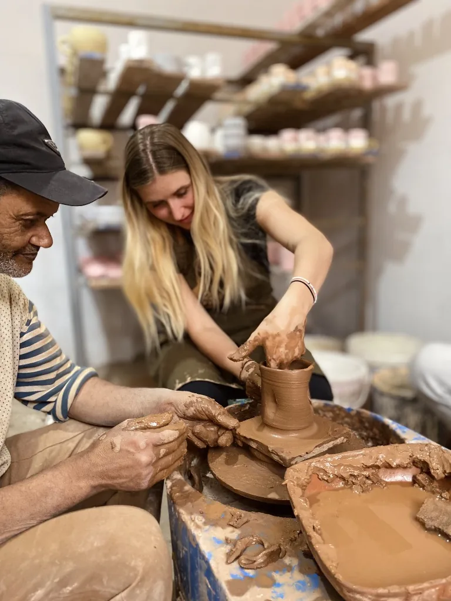
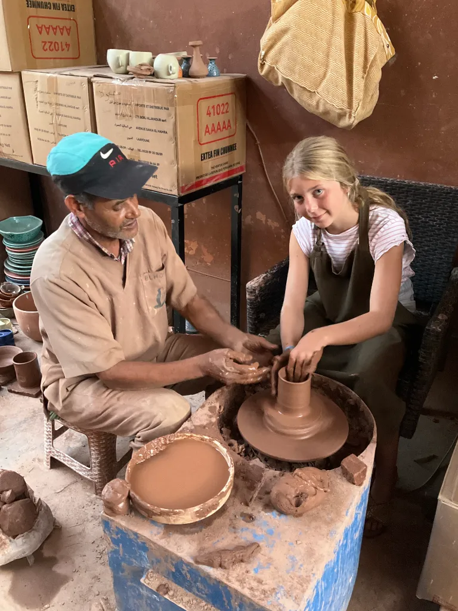
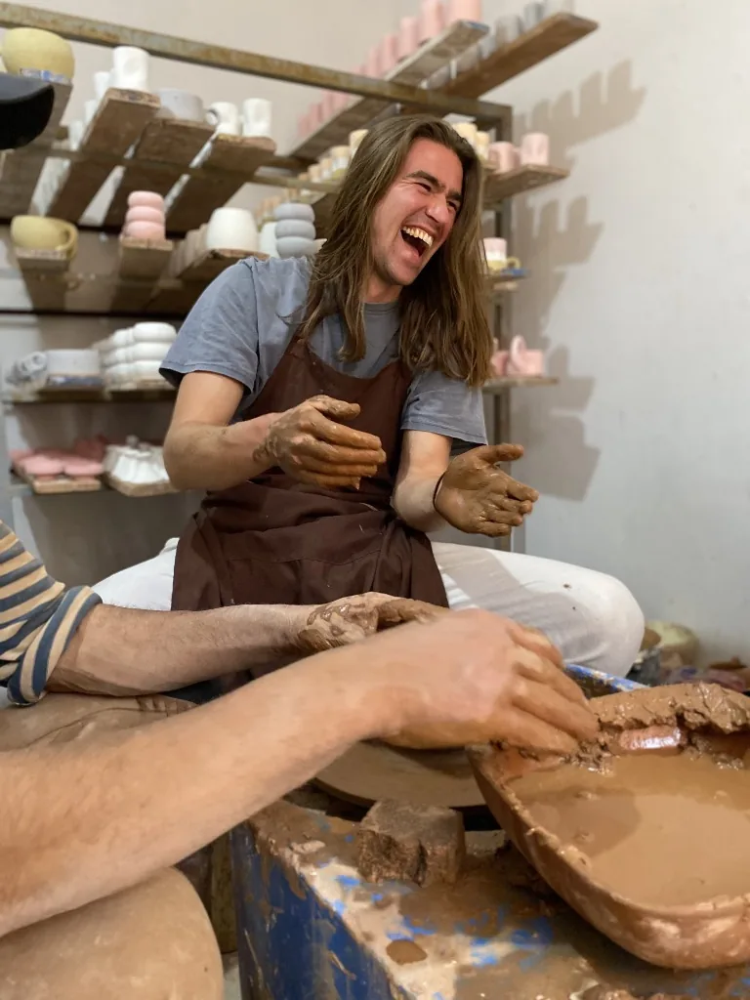
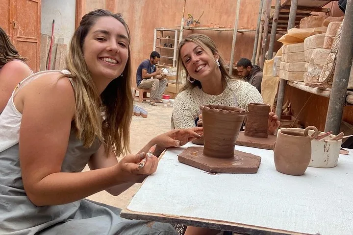
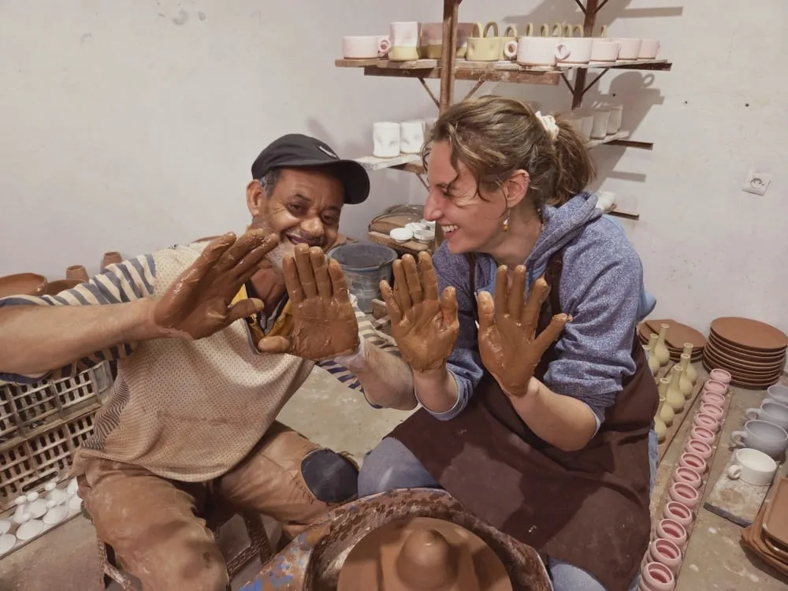

ورشة الفخار المغربي اليدوي

ادخل إلى قلب محترفنا النابض بالحياة في أكادير. اجلس أمام دولاب الفخار التقليدي بمرافقة معلّمي تعاونيتنا الحرفية خطوةً بخطوة، واستشعر السكينة التأملية والمتعة الحسية لتحويل الطين المغربي الأصيل إلى تحفة خزفية تدوم.
مقدمة عملية شاملة تعرّفك على مراحل صناعة الفخار: تحضير الطين الخام، والتوسيط على الدولاب، ووضعية اليدين الصحيحة.
اجلس أمام دولاب الفخار التقليدي مع مرافقة فردية متأنية لتشكيل قطعك الخاصة وصقل حوافها بيديك.
نستقبل المسافرين المنفردين والأزواج والعائلات ومجموعات الأصدقاء بترحاب دافئ وصبر فردي مع كل مشارك.
لحظات حقيقية من ورشاتنا
لمحة حميمية من يوميات محترفنا في أكادير، حيث يكتشف المسافرون وعشاق الخزف من مختلف أنحاء العالم الطاقة الحية للطين المغربي.

توسيط الطين وتشكيل القاعدة
إرشاد دقيق ومرافقة صبورة من حرفي المحترف

رفع الجدران وموازنة الشكل
إتقان الضغط المتوازن والتحكم بانسيابية القطعة

المبدعون الصغار على الدولاب
مرافقة لطيفة وصبورة تمكّن الأطفال واليافعين من تشكيل قطعهم بفخر

بهجة وألفة حول الدولاب
أجواء دافئة ومريحة يبدع فيها كل مبتدئ بثقة

ذكريات إبداعية مشتركة
الأصدقاء والأزواج يبدعون جنباً إلى جنب في فناء محترفنا المشمس

أيادٍ مغمورة بطين الأرض
طين أصيل، وحركة متوارثة، ولحظات لا تُنسى
اختر عدد القطع التي تودّ تشكيلها
نقدّم ثلاث باقات مرنة تناسب إيقاعك الإبداعي. تتم جميع الحجوزات وتنسيق المواعيد مباشرة عبر واتساب دون أي دفع مسبق.
تشكيل قطعة واحدة
مدخل لطيف ومثالي للمبتدئين على دولاب الفخار. تعلّم الأساسيات الأصيلة وشكّل قطعتك الخزفية المغربية الأولى بيديك.
تشكيل قطعتين
تمنحك فرصة تطوير مهارتك على الدولاب عبر تصميمين مختلفين؛ شكّل قطعة مفتوحة (زبدية) وقطعة مرتفعة (مزهرية أو كوب) بثقة.
تشكيل 3 قطع
التجربة المتكاملة للفخار المغربي؛ اكتسب إحساساً عميقاً بحركة اليدين، وأتقن التوسيط، واصنع مجموعتك الخزفية المتناسقة الخاصة.
احجز موعد ورشتك عبر واتساب
لا حاجة لنماذج تسجيل معقدة أو دفع مسبق. اختر تفضيلاتك أدناه واضغط لفتح محادثة واتساب مع طلب حجزك جاهزاً للإرسال!
الأسئلة الشائعة
كل ما تودّ معرفته حول تجربة ورشة الفخار المغربي الأصيل في أكادير.